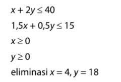
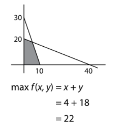
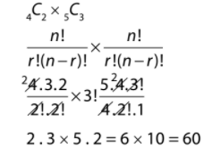
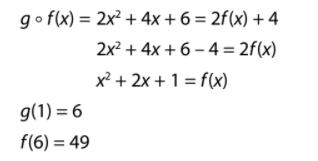
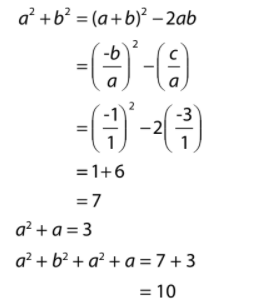
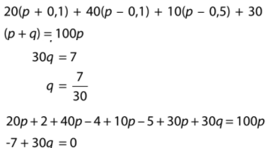
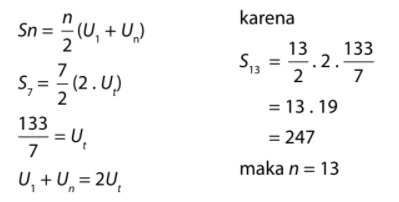
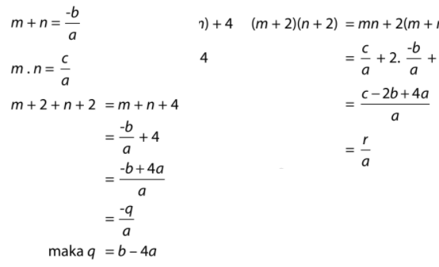
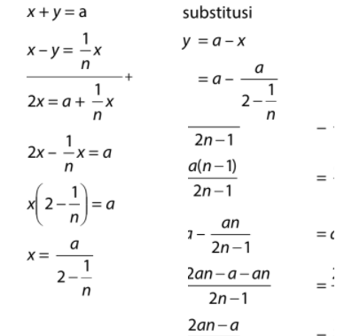
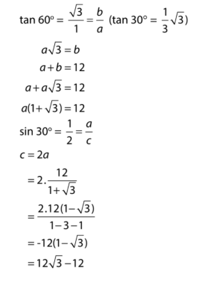

<!DOCTYPE html>
<html lang="en">
  <head>
    <!-- Required meta tags -->
    <meta charset="utf-8" />
    <meta name="viewport" content="width=device-width, initial-scale=1" />

    <!-- Bootstrap CSS -->
    <link href="https://cdn.jsdelivr.net/npm/bootstrap@5.0.1/dist/css/bootstrap.min.css" rel="stylesheet" integrity="sha384-+0n0xVW2eSR5OomGNYDnhzAbDsOXxcvSN1TPprVMTNDbiYZCxYbOOl7+AMvyTG2x" crossorigin="anonymous" />

    <!-- My fonts -->
    <link rel="preconnect" href="https://fonts.gstatic.com" />
    <link href="https://fonts.googleapis.com/css2?family=Poppins:wght@400;500;600&family=Roboto:wght@300;400;500&display=swap" rel="stylesheet" />

    <!-- My CSS -->
    <link rel="stylesheet" href="../style/jawab-tps-PU.css" />

    <title>Soal-PU</title>
  </head>
  <body>
    <!-- Navbar -->
    <nav class="navbar navbar-expand-lg navbar-dark" style="background-color: #007cdc">
      <div class="container">
        <a class="navbar-brand" href="#">
          
        </a>
        <button class="navbar-toggler" type="button" data-bs-toggle="collapse" data-bs-target="#navbarNav" aria-controls="navbarNav" aria-expanded="false" aria-label="Toggle navigation">
          <span class="navbar-toggler-icon"></span>
        </button>
        <div class="collapse navbar-collapse" id="navbarNav">
          <ul class="navbar-nav ms-auto">
            <li class="nav-item roboto-regular">
              <a class="nav-link" aria-current="page" href="./beranda.html">Home</a>
            </li>
            <li class="nav-item ms-4 roboto-regular">
              <a class="nav-link active" href="./materi.html">Materi</a>
            </li>
            <li class="nav-item ms-4 roboto-regular">
              <a class="nav-link" href="./kontak.html">Kontak</a>
            </li>
            <li class="nav-item ms-4 roboto-regular">
              <a class="nav-link" href="./tentang.html">Tentang</a>
            </li>
          </ul>
        </div>
      </div>
    </nav>
    <!-- Akhir Navbar -->

    <main>
      <div class="container">
        <div class="row judul">
          <div class="col text-center">
            <h2><span>Pembahasan :</span> TPA Matematika Soshum</h2>
          </div>
        </div>
        <div class="row justify-content-center">
          <div class="col-9">
            <p class="soal">
              1. Seorang penjahit akan menjahit 2 model pakaian. dia mempunyai persediaan kain batik 40 meter dan kain polos 15 meter model A memerlukan 1 meter kain baitik dan 1,5 kain polos, sedangkan model B memerlukan 2 meter kain batik
              dan 0.5 kain polos. maksimum banyak pakaian yang mungki dibuat adalah
            </p>
            <ul class="list-group jawaban">
              <li class="list-group-item teks-jawaban">A. 10</li>
              <li class="list-group-item teks-jawaban">B. 20</li>
              <li class="list-group-item teks-jawaban-benar">C. 22</li>
              <li class="list-group-item teks-jawaban">D. 22</li>
              <li class="list-group-item teks-jawaban">E. 25</li>
            </ul>
            <p class="jawab">
              Jawaban : C <br />
              <br />
              Pembahasan :
            </p>
            <div class="row mb-4">
                <div class="col-4">
                    
                </div>
                <div class="col" style="margin-top: -30px;">
                    
                </div>
            </div>
            <p class="soal">2. Suatu SMA unggulan akan menyusun tim cerdas cermat yang beranggotakan 2 siswa IPS dan 3 siswa IPA. JIka di SMA tersebut terdapat 4 siswa IPS dan 5 siswa IPA yang berprestasi, maka komposisi tim cerdas cermat dapat dibentuk dengan ... cara.</p>
            <ul class="list-group jawaban">
              <li class="list-group-item teks-jawaban">A. 20</li>
              <li class="list-group-item teks-jawaban">B. 30</li>
              <li class="list-group-item teks-jawaban-benar">C. 60</li>
              <li class="list-group-item teks-jawaban">D. 90</li>
              <li class="list-group-item teks-jawaban">E. 360</li>
            </ul>
            <p class="jawab">
              Jawaban : C <br />
              <br />
              Pembahasan :
            </p>
            <div class="row my-3">
                <div class="col">
                    
                </div>
            </div>

            <p class="soal">3. Jika g(x) = 2x + 4 dan (g °
                f )(x) = 2x^2
                + 4x + 6,
                maka (f °
                g) (1) adalah ....</p>
            <ul class="list-group jawaban">
              <li class="list-group-item teks-jawaban">A. 38</li>
              <li class="list-group-item teks-jawaban">B. 39</li>
              <li class="list-group-item teks-jawaban">C. 46</li>
              <li class="list-group-item teks-jawaban">D. 48</li>
              <li class="list-group-item teks-jawaban-benar">E. 49</li>
            </ul>
            <p class="jawab">
              Jawaban : E <br />
              <br />
              Pembahasan :
            </p>
            <div class="row my-3">
                <div class="col">
                    
                </div>
            </div>

            <p class="soal">4. Jika a dan b akar-akar persamaan kuadrat
                x^2
                + x – 3 = 0, maka 2a^2
                + b^2
                + a = .... </p>
            <ul class="list-group jawaban">
              <li class="list-group-item teks-jawaban-benar">A. 10</li>
              <li class="list-group-item teks-jawaban">B. 9</li>
              <li class="list-group-item teks-jawaban">C. 7</li>
              <li class="list-group-item teks-jawaban">D. 6</li>
              <li class="list-group-item teks-jawaban">E. 4</li>
            </ul>
            <p class="jawab">
              Jawaban : A <br />
              <br />
              Pembahasan :
            </p>
            <div class="row my-3">
                <div class="col">
                    
                </div>
            </div>

            <p class="soal">5. Tiga puluh data mempunyai rata-rata p. Jika
                rata-rata 20% data diantaranya adalah p + 0,1,
                 40% lainnya adalah p – 0,1, 10% lainnya lagi
                adalah p – 0,5 dan rata-rata 30% data sisanya
                adalah p + q, maka q = ....</p>
            <ul class="list-group jawaban">
              <li class="list-group-item teks-jawaban">A. 1/5</li>
              <li class="list-group-item teks-jawaban-benar">B. 7/30</li>
              <li class="list-group-item teks-jawaban">C. 4/15</li>
              <li class="list-group-item teks-jawaban">D. 3/10</li>
              <li class="list-group-item teks-jawaban">E. 1/3</li>
            </ul>
            <p class="jawab">
              Jawaban : B <br />
              <br />
              Pembahasan :
            </p>
            <div class="row my-3">
                <div class="col">
                    
                </div>
            </div>

            <p class="soal">6.  Tujuh bilangan berjumlah 133 membentuk barisan aritmetika. Di setiap dua suku berurutan di barisan tersebut disisipkan rata-rata kedua suku tersebut. Jumlah semua bilangan 
                di barisan baru adalah ….</p>
            <ul class="list-group jawaban">
              <li class="list-group-item teks-jawaban">A. 200</li>
              <li class="list-group-item teks-jawaban-benar">B. 240</li>
              <li class="list-group-item teks-jawaban">C. 247</li>
              <li class="list-group-item teks-jawaban">D. 250</li>
              <li class="list-group-item teks-jawaban">E. 251</li>
            </ul>
            <p class="jawab">
              Jawaban : B <br />
              <br />
              Pembahasan :
            </p>
            <div class="row my-3">
                <div class="col">
                    
                </div>
            </div>

            <p class="soal">7.  Diketahui m dan n akar-akar persamaan ax2
                + bx + c = 0. Jika m + 2 dan n + 2 akar-akar persamaan kuadrat ax2
                + qx + r = 0, maka q + r = ….</p>
            <ul class="list-group jawaban">
              <li class="list-group-item teks-jawaban">A. c + 3b</li>
              <li class="list-group-item teks-jawaban">B. c - b + 4a</li>
              <li class="list-group-item teks-jawaban-benar">C. c - b</li>
              <li class="list-group-item teks-jawaban">D. c - b + 8a</li>
              <li class="list-group-item teks-jawaban">E. c + b + 8b</li>
            </ul>
            <p class="jawab">
              Jawaban : C <br />
              <br />
              Pembahasan :
            </p>
            <div class="row my-3">
                <div class="col">
                    
                </div>
            </div>

            <p class="soal">8.  Jika jumlah dua bilangan positif yang berbeda adalah a dan selisihnya adalah 1/n dari bilangan yang terbesar, maka bilangan terkecilnya adalah</p>
            <ul class="list-group jawaban">
              <li class="list-group-item teks-jawaban">A. a(n-1)/2n-1</li>
              <li class="list-group-item teks-jawaban">B. 2a(n+1)/n-1</li>
              <li class="list-group-item teks-jawaban-benar">C. a(n+1)/2m + 1</li>
              <li class="list-group-item teks-jawaban">D. 2(an+1)/n-1</li>
              <li class="list-group-item teks-jawaban">E. n-1/2(a+1)</li>
            </ul>
            <p class="jawab">
              Jawaban : C <br />
              <br />
              Pembahasan :
            </p>
            <div class="row my-3">
                <div class="col">
                    
                </div>
            </div>

            <p class="soal">9.   Diketahui segitiga ABC mempunyai panjang sisi AC = b cm, BC = a cm dan a + b = 12 cm. 
                Jika sudut A sebesar 60° dan sudut B sebesar 30°, maka panjang sisi AB = ... cm.</p>
            <ul class="list-group jawaban">
              <li class="list-group-item teks-jawaban">A. -12 akar3 −12 </li>
              <li class="list-group-item teks-jawaban-benar">B. 12 akar3 − 12</li>
              <li class="list-group-item teks-jawaban">C. 12 - 6 akar3</li>
              <li class="list-group-item teks-jawaban">D. 12 + 6 akar3</li>
              <li class="list-group-item teks-jawaban">E. 12 akar3 + 12</li>
            </ul>
            <p class="jawab">
              Jawaban : B <br />
              <br />
              Pembahasan :
            </p>
            <div class="row my-3">
                <div class="col">
                    
                </div>
            </div>

            <p class="soal">10. Jika a dan b akar-akar persamaan kuadrat
                x^2
                + x – 3 = 0, maka 2a^2
                + b^2
                + a = .... </p>
            <ul class="list-group jawaban">
              <li class="list-group-item teks-jawaban-benar">A. 10</li>
              <li class="list-group-item teks-jawaban">B. 9</li>
              <li class="list-group-item teks-jawaban">C. 7</li>
              <li class="list-group-item teks-jawaban">D. 6</li>
              <li class="list-group-item teks-jawaban">E. 4</li>
            </ul>
            <p class="jawab">
              Jawaban : A <br />
              <br />
              Pembahasan :
            </p>
            <div class="row my-3">
                <div class="col">
                    
                </div>
            </div>

          </div>
          <div class="row">
            <div class="col d-flex justify-content-center">
              <a class="btn btn-soal" href="./soal-tps-PU.html" role="button">Kembali</a>
            </div>
          </div>
        </div>
      </div>
    </main>

    <!-- Footer -->
    <footer style="width: 100%; height: 195.77px; background: #007cdc" class="py-5 mt-2">
      <div class="container">
        <div class="row">
          <div class="col-4">
            <p style="font-family: Poppins; font-style: normal; font-weight: 600; font-size: 18px; line-height: 120%; /* or 22px */ color: #ffffff">KONTEN WEBSITE KAMI</p>
            <p class="p-footer" style="margin-top: -10px">TPS UTBK</p>
            <p class="p-footer" style="margin-top: -10px">TPA UTBK</p>
            <p class="p-footer" style="margin-top: -10px">UTBK SOSHUM</p>
          </div>
          <div class="col-4 text-center py-1">
            <p class="md-2" style="font-family: Poppins; font-style: normal; font-weight: 600; font-size: 24px; line-height: 120%; /* or 29px */ text-align: center; color: #ffffff">KONTAK KAMI</p>
            
            
            
          </div>
          <div class="col-4 text-end py-1">
            
            <p
              style="
                font-family: Roboto;
                font-style: normal;
                font-weight: 300;
                font-size: 18px;
                line-height: 120%;
                /* identical to box height, or 22px */

                color: #ffffff;
                text-shadow: 0px 4px 4px rgba(0, 0, 0, 0.25);
              "
            >
              Copyright © 2021 sisulut.id
            </p>
          </div>
        </div>
      </div>
    </footer>
    <!-- Akhir Footer -->

    <!-- Optional JavaScript; choose one of the two! -->

    <!-- Option 1: Bootstrap Bundle with Popper -->
    <script src="https://cdn.jsdelivr.net/npm/bootstrap@5.0.1/dist/js/bootstrap.bundle.min.js" integrity="sha384-gtEjrD/SeCtmISkJkNUaaKMoLD0//ElJ19smozuHV6z3Iehds+3Ulb9Bn9Plx0x4" crossorigin="anonymous"></script>

    <!-- Option 2: Separate Popper and Bootstrap JS -->
    <!--
    <script src="https://cdn.jsdelivr.net/npm/@popperjs/core@2.9.2/dist/umd/popper.min.js" integrity="sha384-IQsoLXl5PILFhosVNubq5LC7Qb9DXgDA9i+tQ8Zj3iwWAwPtgFTxbJ8NT4GN1R8p" crossorigin="anonymous"></script>
    <script src="https://cdn.jsdelivr.net/npm/bootstrap@5.0.1/dist/js/bootstrap.min.js" integrity="sha384-Atwg2Pkwv9vp0ygtn1JAojH0nYbwNJLPhwyoVbhoPwBhjQPR5VtM2+xf0Uwh9KtT" crossorigin="anonymous"></script>
    -->
  </body>
</html>
